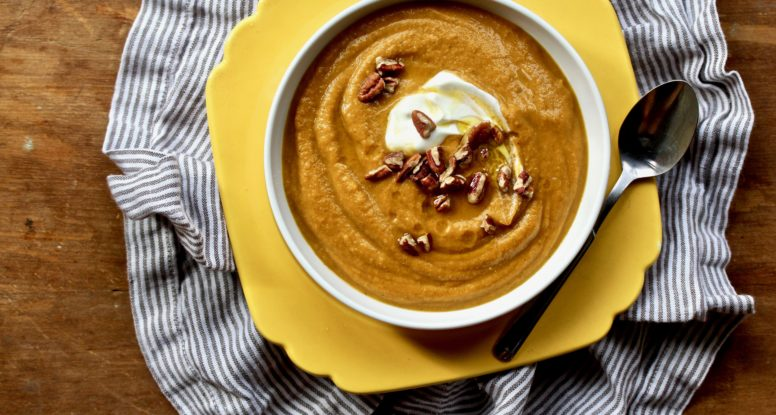

Pumpkin Spice Lentil Soup

I love pumpkins. There. I said it and now it’s out of the way. I’m not sorry about it either. Because pumpkins are 100% awesome and they 100% make me happy.
So happy that nearly all of the Halloween decorations in my house involve a pumpkin somehow. Beyond looking at them, I also love to eat them. And while I love a yummy sweet treat made with pumpkin, I also dig the savory stuff. Enter this Pumpkin Spice Lentil Soup!
Ingredients
- 1 tablespoon extra virgin olive oil
- ½ white onion, diced
- 2 large carrots, peeled and diced
- 2-inch knob ginger, peeled and minced
- 2 cloves garlic, minced
- 1 teaspoon ground cinnamon
- 1/8 teaspoon ground cardamom
- 1/8 teaspoon ground cloves
- ¼ teaspoon ground nutmeg
- 1 cup red lentils, sorted and rinsed
- 1 cup pumpkin puree
- 4 cups low-sodium vegetable or chicken broth
Steps
- Set a medium saucepan over medium-high heat. Add the oil. Once hot, add the onion and carrots and cook until softened, about 8-10 minutes. Add the ginger and garlic, cook an additional minute, until fragrant. Add the spices and stirring constantly, cook for one minute. Stir in the lentils, pumpkin puree and broth and bring to a boil. Reduce heat to a simmer and cook, partially covered, until lentils are tender, about 40-45 minutes.
- Working in batches, carefully puree the soup until smooth. Stir in the vinegar, salt and sugar and thin with extra broth or water, if desired. Serve garnished with yogurt and pecans.